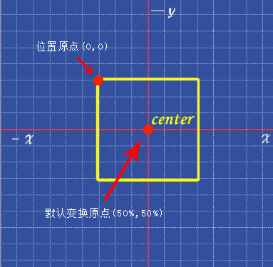

transform-origin属性：默认值50% 50%；表示以距离 位置原点（自称的） 横坐标50%，纵坐标50%的点 为 变换原点 进行转换。
transform-style属性：默认值flat，表示以何种空间方式呈现后代元素（注意点：见样式里的注释）。flat：2维平面方式显示；preserve-3d：3D空间显示。因此，此属性一般应用在变换元素的共同祖先元素
perspective视距属性（默认值：none）、perspective-origin视点坐标属性（默认值：50% 50%）。这两个属性一般应用于变换元素的共同祖先元素（舞台对象）
